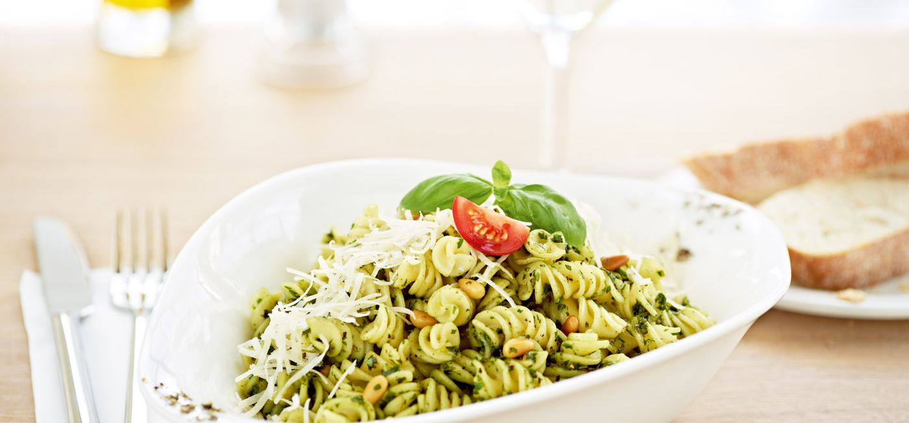

Vapiano was the first restaurant I ate at when I first joined parsons, with my first group of friends. Since then its been our tradition to sit down for lunch/dinner every beginning and end of the semesters. Its a special place for my friends and I.
